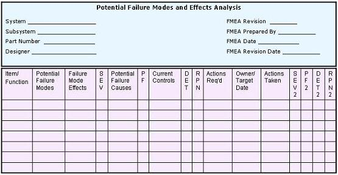

|
Failure Modes
and Effects Analysis (FMEA) Procedural Guide
See also: Failure Modes and Effects
Analysis (FMEA) Overview
|
1 |
Describe the
product
or
process.
A
clear and specific description of the product or process
undergoing FMEA must first be articulated. The
creation of this description ensures that the responsible engineer
fully understands the 'form, fit, and function' of the product or
process.
|
|
2 |
Draw a
block diagram
of the product or process.
A block diagram
of the product/process needs to be developed to show the logical
relationships between the components of the product or the
steps/stages of the process. A block diagram may be in the
form of boxes connected by lines, with each box corresponding to a
major component of the product or a major step of the process. The
lines correspond to how the product components or process
steps are related to each other.
|
|
3 |
Complete the
header
of the FMEA Table (Table 1).
FMEA
Table headers vary from one to the next, since they are
supposed to be customized according to the requirements of the
companies using them. Generally the header requires, among others
that you may wish to add, the following information: Product/Process/System
Name, Component/Step Name; Product Designer or Process Engineer,
Name of the Person who prepared the FMEA form; FMEA Date; Revision
Level (letter or number); and Revision Date.
|
|
4 |
Enumerate the
items
(components, functions, steps, etc.) that make up the product or
process.
Break
down the product or process being subjected to FMEA into its major
components or steps. List down each of these components or steps
in
Column 1
of the FMEA table. The items must be listed down
in a logical manner.
|
|
5 |
Identify all potential
Failure Modes
associated with the product or process.
A
failure mode is defined as how a system, product, or process is
failing.
Now
here arises some confusion in the semiconductor industry, which
usually measures its failure modes in terms of how the product or
process is deviating from its specifications. A product or
process can have hundreds of different failure modes based on this
definition, most of which are highly correlated to each other
because of a common failure mechanism behind them.
A
failure mechanism is defined as the physical phenomenon behind the
failure mode(s) observed, e.g., die cracking, corrosion,
electromigration, etc.
To
simplify the use of FMEA in the semiconductor industry, therefore,
the engineer may choose whether to construct the FMEA table in
terms of failure modes or in terms of failure mechanisms.
For convenience of discussion, the term 'failure mode' shall refer
to either failure mode or failure mechanism when used in this web
page (this web page only!).
An
example of a semiconductor process where failure mechanisms may be
more effective to use is Wirebonding, whose failure mechanisms
include ball lifting, wedge lifting, wire breaking, bond-to-bond
shorting, etc.
|
|
6 |
List down each Failure Mode using its technical term.
Using
an official technical term for listing the failure mode prevents
confusion.
All
potential failure modes should be listed down for each item
(product component or process step).
Column 2 of the FMEA Table
shall be used for this purpose.
|
|
7 |
Describe the effects of each of the failure modes listed and
assess the severity of each of these effects.
For
each of the failure modes in Column 2, a corresponding
effect (or effects) must be identified and listed in
Column 3
of
the FMEA Table. A failure effect is what the customer
will experience or perceive once the failure occurs. A
customer may either be internal or external, so effects to both
must be included. Examples of effects include: inoperability
or performance degradation of the product or process, injury to
the user, damage to equipment, etc.
Assign a severity rating to each effect. Each company may develop its
own severity rating system, depending on the nature of its business.
A common industry standard is to use a 1-to-10 scale system, with the
'1' corresponding to 'no effect' and the '10' corresponding to maximum
severity, such as the occurrence of personal injury or death with no
warning or a very costly breakdown of an enormous system.
Column 4
of the FMEA Table is used for the severity rating
(SEV)
of the failure mode.
|
|
8 |
Identify the possible cause(s) of each failure mode.
Aside
from its effect(s), the potential cause(s) of every listed failure
mode must also be enumerated. A potential cause should be
something that can actually trigger the failure to occur.
Examples of failure causes include: improper equipment set-up,
operator error, use of worn-out tools, use of incorrect software
revision, contamination, etc.
The
potential causes are listed in
Column 5
of the FMEA Table.
|
|
9 |
Quantify the probability of occurrence (Probability Factor or PF) of
each of the failure mode causes.
The
likelihood of each of the potential failure cause occurring must
be quantified. Every failure cause will then be assigned a
number
(PF)
indicating this likelihood or probability of occurrence. A
common industry standard for this is to assign a '1' to a cause
that is very unlikely to occur and a '10' to a cause that is
frequently encountered.
PF
values for each of the failure causes are indicated in
Column 6
of the FMEA Table.
|
|
10 |
Identify
all existing controls (Current Controls) that contribute to the
prevention of the occurrence of each of these failure mode causes.
Existing controls
that prevent the cause of the
failure mode from occurring or detect the failure before it
reaches the customer must be identified and evaluated for its
effectiveness in performing its intended function. Each of
the controls must be listed in
Column 7
of
the FMEA Table.
|
|
11 |
Determine the ability of each control in preventing or detecting
the failure mode or its
cause.
The effectiveness of each of the listed controls must then be
assessed in terms of its likelihood of preventing or detecting the
occurrence of the failure mode or its failure cause. As
usual, a number must be assigned to indicate the detection
effectiveness
(DET)
of each control. DET numbers are shown in
Column 8
of the FMEA Table.
|
|
12 |
Calculate the Risk Priority Numbers (RPN).
The Risk Priority Number
(RPN) is
simply the product the Failure Mode Severity (SEV), Failure Cause Probability
(PF), and
Control Detection Effectiveness (DET) ratings. Thus, RPN = (SEV) x (PF)
x (DET).
The RPN, which is listed in
Column 9
of the FMEA Table, is used in prioritizing which items require additional quality
planning or action.
|
|
13 |
Identify action(s) to address potential failure modes that
have a high RPN.
A
high RPN needs the immediate attention of the engineer since it
indicates that the failure mode can result in an enormous negative
effect, its failure cause has a high likelihood of occurring, and
there are insufficient controls to catch it. Thus, action
items must be defined to address failure modes that have high
RPN's.
These
actions include but should not be limited to the following: inspection, testing,
monitoring, redesign,
de-rating, conduct of preventative maintenance, redundancy,
process evaluation/optimization, etc.
Column 10
of the FMEA Tables is used to list down applicable action items.
|
|
14 |
Implement the defined actions.
Assign a responsible owner and a target date of completion for
each of the actions defined. This makes ownership of the actions clear-cut and facilitates
tracking of the actions' progress. The responsible owner and
target completion dates must be indicated in
Column 11
of
the FMEA Table.
The
status or outcome of each action item must also be indicated in
Column 12
of the FMEA Table.
|
|
15 |
Review the results of the actions taken and reassess the RPN's.
After the
defined actions have been completed,
their over-all effect on the failure mode they're supposed to
address must be reassessed. The engineer must update the SEV,
PF, and DET numbers accordingly. The new RPN must then be
recalculated once the new SEV, PF, and DET numbers have been
established. The new RPN should help the engineer
decide if more actions are needed or if the actions are
sufficient.
Columns 13, 14, 15,
and
16
of the FMEA Table
are used to indicate the new SEV, PF, DET, and RPN, respectively.
|
|
16 |
Keep
the FMEA Table updated.
Update the FMEA
table
every time the product design or process changes or new actions or
information cause the SEV, PF, or DET to change.
|
Table
1. Example of a Simplified FMEA Table

See also:
Failure Modes and Effects
Analysis (FMEA) Overview.
HOME
Copyright
© 2005
EESemi.com.
All Rights Reserved. |